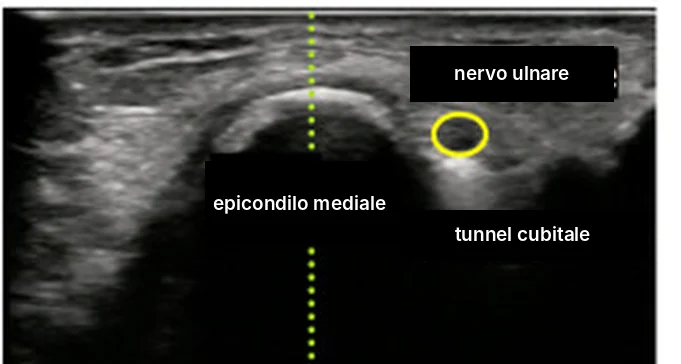

Il nervo ulnare passa in un canale stretto dietro alla sporgenza interna del gomito — è il punto che, se urtato, dà quella scossa fino al mignolo. Quando in quel passaggio il nervo viene compresso o stirato a lungo, compaiono formicolii e, con il tempo, perdita di forza nella mano.
È la seconda compressione nervosa più frequente dell'arto superiore, dopo quella del tunnel carpale.

Come si manifesta
- Formicolio e riduzione della sensibilità al mignolo e alla metà dell'anulare.
- I sintomi peggiorano tenendo il gomito piegato a lungo: al telefono, in auto, e soprattutto di notte.
- Dolore o fastidio sulla parte interna del gomito, che può estendersi lungo l'avambraccio.
- Con il tempo, una mano meno precisa: difficoltà ad allargare le dita, a tenere un foglio fra pollice e indice, a girare una chiave.
- Nelle forme avanzate, i muscoli fra pollice e indice si assottigliano visibilmente.
Il formicolio notturno con la necessità di scuotere la mano è tipico anche del tunnel carpale: lì però riguarda pollice, indice e medio, non il mignolo.
Quando preoccuparsi
Contatta il medico presto se
- noti che i muscoli della mano si stanno assottigliando;
- la forza sta calando, o la mano è diventata meno precisa nei gesti fini;
- il formicolio è diventato continuo, invece di andare e venire;
- i sintomi sono iniziati dopo un trauma al gomito.
Qui vale la stessa regola delle altre sofferenze nervose: è la perdita di forza o di massa muscolare a indicare che non conviene aspettare, non l'intensità del formicolio.
Cosa puoi fare tu
Fai
- Evita di tenere il gomito molto piegato a lungo: è la posizione che mette in tensione il nervo.
- Di notte, tieni il braccio il più disteso possibile. Un asciugamano arrotolato davanti al gomito e fissato senza stringere può bastare.
- Non appoggiare il gomito su scrivanie, braccioli o finestrini.
- Usa l'auricolare al telefono se parli a lungo.
Non fare
- Non dormire con il braccio piegato sotto il cuscino o sotto la testa.
- Non ignorare un calo di forza perché «tanto il formicolio va e viene».
- Non affrettarti a fare esami diagnostici senza aver chiesto il parere del tuo medico.
Servono esami?
La visita orienta: dove sono i disturbi, se il nervo è dolente o scivola fuori dal suo canale piegando il gomito, se la forza e la massa muscolare sono conservate.
L'elettromiografia è l'esame che misura quanto il nervo è sofferente e dove, ed è quello su cui si basa la decisione di operare. L'ecografia può mostrare il nervo e le sue dimensioni. È il medico specialista che valuta sulla base della visita se siano necessari, e quando.
Le cure, e quanto funzionano
La fonte di riferimento è una revisione Cochrane aggiornata nel 2025: quindici studi randomizzati, 970 partecipanti in tutto.[1] Il quadro che ne esce è onesto e va riferito come tale, perché la fiducia nelle prove è bassa quasi ovunque.
Nelle forme lievi e moderate
- La semplice informazione su come evitare le posizioni che mettono in tensione il nervo è risultata efficace quanto l'aggiunta di un tutore notturno o di esercizi di scorrimento del nervo, su attività lavorative e dolore notturno. È un risultato importante: la prima cosa da fare costa poco ed è alla portata di chiunque.
- Infiltrazione di corticosteroide: non è emersa alcuna prova che migliori i sintomi.
- Infiltrazione di destrosio: potrebbe ridurre il dolore a quattro e a dodici mesi rispetto al placebo. È un dato isolato, da prendere come un'indicazione per la ricerca più che come una raccomandazione.
Conservativo o intervento?
Un solo studio ha confrontato direttamente le due strade, e la certezza delle prove è molto bassa: la revisione non è in grado di dire quale sia meglio.[1] Nella pratica la decisione si basa sulla gravità, sulla durata e soprattutto sull'andamento nel tempo: un quadro che peggiora, o una perdita di forza, spostano la bilancia verso l'intervento.
Se si opera
Qui le prove sono più solide, e sono rassicuranti: la decompressione semplice e la trasposizione del nervo danno risultati equivalenti, sia sul miglioramento funzionale sia sulle complicanze; e l'approccio endoscopico equivale a quello aperto.[1] In altre parole, non esiste una tecnica che sia la scelta giusta per tutti: conta più l'indicazione che il metodo.
Quando serve lo specialista
Per confermare che i sintomi vengano dal gomito e non dal collo o dal polso, per quantificare la sofferenza del nervo quando serve, e per decidere i tempi: in questa condizione la finestra in cui il trattamento conservativo ha senso dipende da quanto il nervo è già compromesso.
E per discutere, numeri alla mano, quale trattamento sia più idoneo per la tua situazione.
Da dove vengono queste informazioni
- Caliandro P, La Torre G, Padua R, Giannini F, Reale G, Padua L. Treatment for ulnar neuropathy at the elbow. Cochrane Database of Systematic Reviews 2025, numero 4, CD006839. doi:10.1002/14651858.CD006839.pub5. Quindici studi, 970 partecipanti; ricerca della letteratura aggiornata al 18 luglio 2022.
La revisione giudica la certezza delle prove da molto bassa a moderata secondo il confronto: molto bassa per il paragone fra trattamento conservativo e intervento, bassa o moderata per il confronto fra le tecniche chirurgiche. I limiti principali sono il disegno degli studi e la loro piccola dimensione.
Scheda aggiornata il 6 novembre 2026. Prossima revisione prevista entro novembre 2028.
Cerca un'altra scheda
Un disturbo, un trattamento, o anche solo il punto che fa male: «formicolio», «tallone», «spalla congelata».